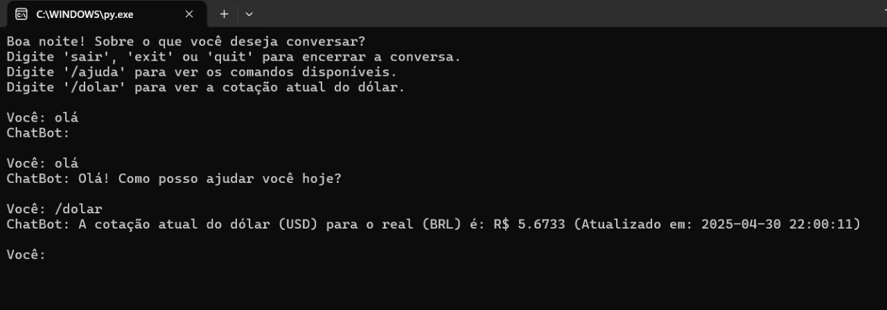

Dollar
Bot
DollarBot é um bot de conversão de moedas que pode ser feita através de um comando programado para realizar a extração dos dados da URL configurada, extrair o valor do Dólar atual e o converte em Real.
Protótipo:
